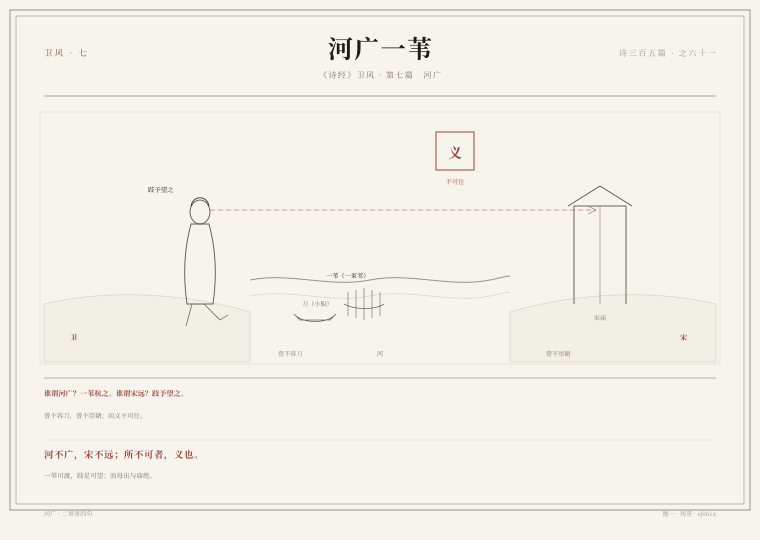
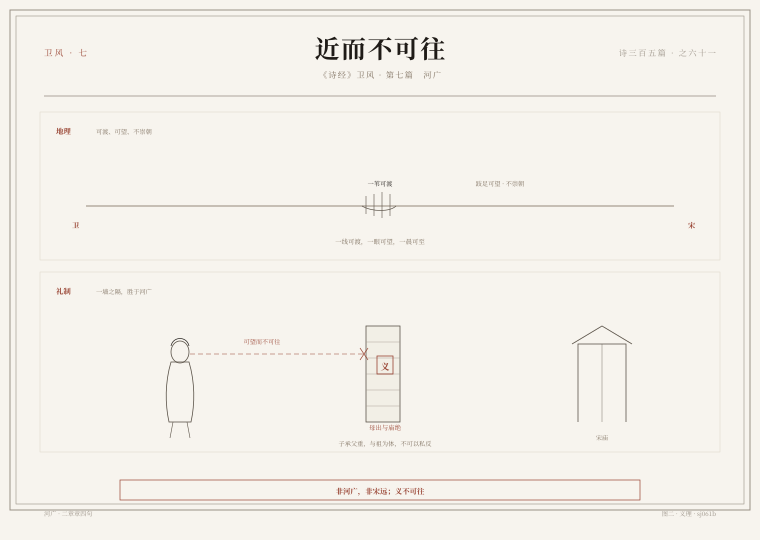

第六十一篇 河广
卫风 · 之七 SJ061
朗读 · 普通话
依经文原文朗读，章次不读出；配古琴底乐，不改速、不加拖腔。全库同一音色（豆包 TTS），非播音员录制。
一 解题
诗三判：
- 谁在说：宋襄公的母亲，宋桓公夫人，卫文公之妹，宣姜之女。她生下襄公后被出，回到卫国；襄公即位，她思宋，却不能回去。
- 说什么事：河不广，宋不远。一束苇筏可以渡河，踮起脚可以望宋，一条小船都容不下的河，一个早晨都用不了的路；可是她不能渡、不能往。
- 为何编在此：卫风第七。前《芄兰》刺「德不称服」，此篇写「义不可往」；卫风从情、到礼、到仪、到义，一层深一层。
《毛序》：「《河广》，宋襄公母归于卫，思而不止，故作是诗也。」
郑笺：「宋桓公夫人，卫文公之妹，生襄公而出。襄公即位，夫人思宋，义不可往，故作诗以自止。」
朱子《诗集传》：「赋也。卫在河北，宋在河南。宣姜之女为宋桓公夫人生襄公而出归于卫。襄公即位，夫人思之而义不可往。盖嗣君承父之重，与祖为体，母出与庙绝，不可以私反，故作此诗。言谁谓河广乎？但以一苇加之，则可以渡矣；谁谓宋国远乎？但一跂足而望，则可以见矣。明非宋远而不可至也，乃义不可而不得往耳。」
本库的看法：《河广》是一首「近在眼前，不能过去」的诗。
全篇四问：两问河，两问宋；答案都是「近」——一苇可渡，跂足可望，不容刀，不崇朝。可它偏偏不渡、不往。不是河广，不是宋远，是「义」把路截断了。地理越近，礼制越远；诗里越说「能过去」，诗外越显得「不能过去」。
先辨三物：一苇，不是一根芦苇，是一束苇、一个苇筏；刀，不是兵器，是小船；崇朝，不是「崇敬朝廷」，是终朝、一个早晨。
二 经文
第一章
谁谓河广？一苇杭之。谁谓宋远？跂予望之。
第二章
谁谓河广？曾不容刀。谁谓宋远？曾不崇朝。
分章：二章，章四句。
三 韵读
| 一 |
杭、望 |
唐、阳；广、远不入韵 |
| 二 |
刀、朝 |
豪、宵；广、远不入韵 |
两章都以第二、四句为韵，第一、三句的「广」「远」不押。一章「杭、望」是阳唐一部，声音开阔；二章「刀、朝」是豪宵一部，收得较快。四句里两个反问，两个答案；问句不押，答句押，像一问一答，答得越来越急。
四 字义与名物
字义
- 河——黄河；卫、宋之间的大水。诗以河为喻，不必坐实为某一段渡口。
- 广——宽；「谁谓河广」是反问，不是真问。
- 一苇——一束苇，或一个苇筏；郑笺说「一苇加之则可以渡之」，孔疏更明确：「一苇者，谓一束也……非一根苇也。」
- 杭——渡；毛传「杭，渡也」；字通「航」。
- 宋——宋国；在今河南商丘一带；宋桓公、宋襄公之宋。
- 远——路远；「谁谓宋远」也是反问。
- 跂（qǐ）——踮脚、举足；朱子「跂足而望」。
- 予——我；郑笺「予，我也」。
- 望——望见；不是「希望」。
- 曾——乃、竟、连；「曾不容刀」是「竟容不下一只小船」。
- 刀——小船；郑笺「船曰刀」；字书作「舠」，不是兵器。
- 崇朝——终朝，一个早晨；郑笺「崇，终也。行不终朝，亦喻近。」
- 义——这里不是泛泛的「道理」，是「母出与庙绝」的礼制：被出的母亲，不能以私情回到夫家宗庙。
- 母出与庙绝——出妻与夫家宗庙断绝；子承父重，与祖为体，所以嗣君之母不可私反。
名物
- 河——黄河；诗中的「广」与「不容刀」，都是拿河说事。
- 苇——芦苇；一束苇可作筏，故「一苇杭之」。
- 刀（舠）——小船；「曾不容刀」极言河窄。
- 崇朝——一个早晨；「曾不崇朝」极言路近。
- 庙——宗庙；「母出与庙绝」是「义」的具体所指。
- 宋——宋国；不是「送」，也不是「颂」。
五 今译
第一章
谁说黄河宽？一束苇筏就能渡过去。谁说宋国远？踮起脚就能望见。
第二章
谁说黄河宽？竟容不下一只小船。谁说宋国远？用不了一个早晨就能到。
说明：「一苇」今译作「一束苇筏」，取郑笺、孔疏；「刀」今译作「小船」，取郑笺「船曰刀」；「崇朝」今译作「一个早晨」，取郑笺「崇，终也」。
六 章旨
一章：一问河，一问宋。
「谁谓河广」先把问题提出来，「一苇杭之」立刻把河说窄；「谁谓宋远」再问，「跂予望之」立刻把宋拉近。两个反问，两个夸张，不是不知道河广宋远，是故意说窄、说近。
二章：再问河，再问宋。
「曾不容刀」比「一苇杭之」更窄：连一只小船都容不下；「曾不崇朝」比「跂予望之」更近：连一个早晨都用不了。重复不是啰嗦，是把「可渡」「可望」推到极限。
两章合看：诗里句句说能过去，诗外一句说不能过去。
能过去的是河，不能过去的是义；河越窄，义越重；宋越近，礼越远。
七 诗教
- 赋：直陈其事，不绕弯；四个「谁谓」是反问，也是抗议。越是说得轻快，越显得心里沉。
- 观：观「义」与「情」的冲突——她不是不想，是想而不止；观「近在眼前而不能」——地理可以缩短，礼制不能；观「母出与庙绝」——一纸礼制，把母子、把故乡，隔成两岸。
- 群：可与远嫁者、离乡者、不能归者同群；也可与「被一纸规矩挡住」的人同群。诗没有替她骂，只替她问。
- 怨：怨而不怒。「谁谓」是怨，「曾不」是急；但她没有诅咒，没有奔，没有哭，只把「能过去」说给人听，让人自己看见「不能过去」。
八 分寸与边界
- 不可把「一苇」当一根芦苇。郑笺、孔疏都说是一束、一个苇筏；一根芦苇渡不了河。
- 不可把「河广」「宋远」当实际地理。诗是反问、夸张；孔疏甚至说，文公时卫已在河南，自卫适宋不渡河。河是取喻，不必坐实。
- 不可把「义不可往」读成「不想去」。她「思而不止」，是想去而不能去；义是礼制，不是感情冷淡。
- 不可把「宋襄公母」当「宋襄公妻」。她是宋桓公夫人、宋襄公之母；身份一错，全篇的「母出与庙绝」就无处落地。
- 不可把「刀」当兵器。这里是小船、舠；「曾不容刀」是河窄，不是动刀兵。
- 不可把「崇朝」当「崇敬朝廷」。崇，终也；崇朝即终朝、一个早晨。
- 不可把「跂」当「企」的错字。跂是踮脚、举足；「跂予望之」就是踮起脚望。
九 存疑
- 诗旨与作者：毛序、郑笺、朱子都把诗人归为宋襄公母；但是否夫人自作，还是诗人代其口吻，无确证。
- 地理：朱子说「卫在河北，宋在河南」；孔疏却说文公时卫已在河南，自卫适宋不渡河。诗中的河是取喻，还是实指，历来有异说。
- 「一苇」：一束苇、苇筏、一叶扁舟，皆可通；孔疏的「一束」最具体，今译从之。
- 「刀」：小船、舠；《释名》又有「三百斛曰刀」之说，大小不必拘泥。
- 「崇朝」：终朝、一个早晨；具体从旦至食时，是旧注的常训。
- 「义」与礼制：母出与庙绝，是孔疏、朱子共同的解释；郑笺只说「义不可往」。具体礼制细节，各家有异，不必展开。
- 宋襄公母的身份：宋桓公夫人、卫文公之妹、宣姜之女；三说可互证，但出归的具体年月无确证。
- 「谁谓」是否实指：可以是真问，也可以是反问；诗里两读都通，本库取反问。
十 跨典
- 《周南·汉广》：「汉之广矣，不可泳思。」同样是「广」而不可渡；《汉广》是爱情不可求，《河广》是亲情不可往。
- 《秦风·蒹葭》：「所谓伊人，在水一方。」可望而不可即；《河广》「跂予望之」，望见了，仍不能往。
- 《邶风·泉水》：「毖彼泉水，亦流于淇。」卫女思归，想而有路；《河广》思宋，路近而义断。
- 《鄘风·载驰》：许穆夫人归唁其兄，行动更激烈；《河广》连行动都没有，只有四句反问。
- 《卫风·竹竿》：同是思归，竹竿以「写忧」收，河广以「谁谓」问；一个忍，一个急。
- 礼制旧说：「母出与庙绝」是礼制；《河广》把这四个字写成了两岸。
十一 双卡与图
双卡五对：
| 一苇（一束苇／苇筏） |
一苇（一根芦苇，误） |
| 刀（小船／舠） |
刀（兵器，误） |
| 崇朝（终朝／一早晨） |
崇朝（崇敬朝廷，误） |
| 义（母出与庙绝） |
义（一般道理，泛） |
| 宋襄公母（宋桓夫人） |
宋襄公妻（误） |

图一 · 河狭宋近，一苇可渡而义不可往 场景图

图二 · 地理可渡，礼制不可往 义理图
读图三处：
- 一苇：图一，一束苇筏横在窄河上；河不是过不去，是不许过去。
- 跂望：图一，卫女踮脚望宋；望得见，走不过去。
- 义：图二，地理一线可渡，礼制一墙挡住；「母出与庙绝」六个字，比河宽。